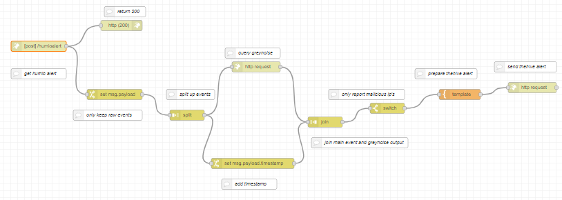
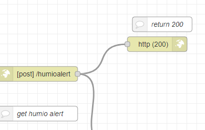
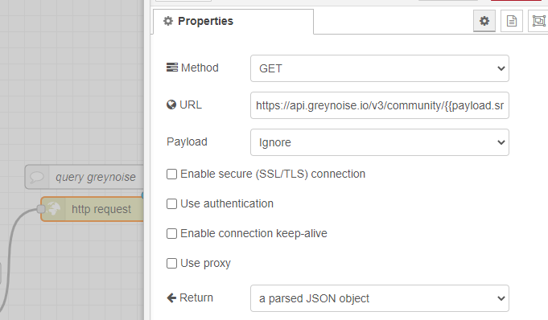
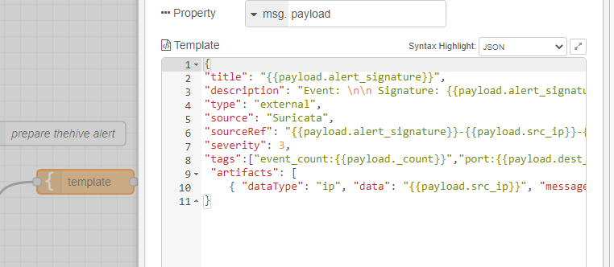

Automation and enrichment
Automation and enrichment
• Automation can be used to respond to alerts automatically and/or to provide enriched alerts
• Typically, the frameworks or services have two node types
◇ trigger node - starts a workflow/automation
◇ action node - nodes that actually perform actions, such as blocking an IP or doing an hash lookup
• Automation frameworks for generic automation and for security specific automation exist (SOAR)
◇ nodered - js based automation framework, supports visual programming, self-hosted
◇ n8n.io - js based automation framework, supports visual programming, self-hosted/saas
◇ Huginn - ruby based framework, self-hosted
◇ thehive cortex - security focused framework that works with various infosec services, self-hosted
◇ tines.io - visual programming automation framework that works with various infosec services, saas
◇ shuffler.io - visual programming automation framework that works with various infosec services, self-hosted/saas
◇ xsoar - automation framework that works with various infosec services, self-hosted
◇ zapier, automation.io - automation service that works with various other services, saas
◇ ifttt - automation service that works with various other services, saas
Nodered example
In this example, nodered is getting all the suricata alerts, extracting the source ip, checking graynoise, then alerting into thehive if IP is reported as malicious.
Alert from Humio is sent to nodered via webhook
Greynoise is queried for the IP address
Template is prepared with the context and correct key/values and a request is sent to thehive to create a new alert w/ context
